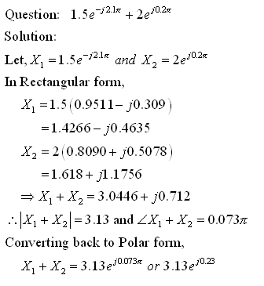

Sinusoidal signals are the most basic signals in the theory of signals and systems. This tool tries to help the student in getting more familiar with operations that need to be performed on Sinusoids. Manipulating sinusoids can be done by representing them as Phasors and Complex exponentials. In this section we give a brief overview of the different kinds of representation of sinusoids and some basic operations that can be performed on them.
Sinusoids include both 'cosine' and 'sine' signals. The mathematical formula representing a sinusoidal signal is
Analysis and manipulation of sinusoidal signals in the above form will be difficult to achieve. So, often they are converted to related Complex exponential signals which are easier to manipulate and analyze. These complex exponentials depend on the polar form of representation of complex numbers.In general for a complex number represented in cartesian form
its modulus and phase are represented as Using the above relations any complex number can be represented in polar form, A better polar form can be obtained using Euler's formula for complex exponentials, given below. Making use of the above relation any complex number can be represented as, Now we will look at the relation between sinusoidal signal and its representation as a complex exponential signal. The complex exponential signal is defined in the next equation and represnted using Euler's formula as shown, From this the representation cosine part can be obtained asHaving been exposed to different ways of representing sinusoidal signals, next we look at ways to manipulate such signals using the above representations. One useful operation would be to add 2 or more sinusoids. This can be achieved by first representing the sinusoids as complex exponentials and then converting to the cartesian or rectangular forms. Addition of 2 or more components can be easily done in rectangular form. After this they can be converted back to sinusoid form.
The Examples section provides examples for doing several forms of this manipulation.i.e., between cosine, complex exponentials, phasors and rectangular forms of complex numbers.
Sampling The continuous time sinusoid given as
can be represented in its discrete-time form for a given sampling periodTs as shown below,
Here we do not deal with issues related to sampling of signals, please refer to
other related tools to know more about sampling of signals.
Pole-Zeros from Transfer function The general form of representing system transfer function is
Let us consider the second-order case, which is represented as The numerator and denominator polynomials each have 2 roots. The numerator roots are called the 'Zeros', since for these roots H(z) becomes zero. The denominator roots are called 'Poles' of the system and for these roots, H(z) becomes undefined (infinite). The poles and zeros are plotted in the complex z-plane and can be determined as shown in the Example section below. The next section deals with specific examples related to the various types of tests in the Phasor Races GUI.
Does it all make sense to you? If you are not sure go over it one more time.
If you still do not get it, let me know what is confusing you. Send me by clicking on my name in the Overview section. I want to make this tutorial understandable and any feedback is appreciated!